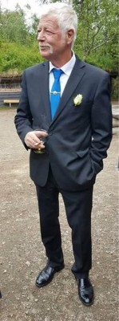

Arild Guldahl
M, #601, f. 4 november 1952, d. 6 september 2024
Foreldre
Familie: Anita Elisabeth Hovland
Biografi
Arild Guldahl ble født den 4 november 1952 Oslo. Han giftet seg med Anita Elisabeth Hovland den 18 juni 1976 på/i Oslo. Han døde den 6 september 2024 på/i AHUS, Lørenskog, Akershus.
Arild Guldahl ble bisatt den 20 september 2024 Høybråten kirke, Oslo.
| Sist redigert |
12 september 2024 08:44:59 |
Per Roger Guldahl
M, #607, f. 13 februar 1953, d. 8 mai 2026
Foreldre
Familie: Turid Elisabeth Falch
| Datter | Anne Lise Guldahl+ |
| Datter | Tove Mette Guldahl |
| Datter | May Linn Guldahl |

Per Roger Guldahl
Biografi
Per Roger Guldahl ble født den 13 februar 1953 Oslo. Han giftet seg med Turid Elisabeth Falch. Han og Turid Elisabeth Falch ble skilt. Han døde av av kreft den 8 mai 2026 på/i SiA, Lørenskog, Akershus.
Per Roger Guldahl ble bisatt den 26 mai 2026 Stalsberghagen krematorium store kapell, Lillestrøm, Akershus.
| Sist redigert |
16 mai 2026 11:15:52 |
Vidar Guldahl
M, #615, f. 28 februar 1953, d. 16 mars 2009
Foreldre
Familie: Tove Holøien
| Datter | Linda Holøien Guldahl |
| Datter | Therese Guldahl |
Biografi
Vidar Guldahl ble født den 28 februar 1953 Lillestrøm, Skedsmo, Akershus. Han giftet seg med Tove Holøien den 11 august 1979 på/i Skårer kapell, Lørenskog, Akershus. Han døde av kreft den 16 mars 2009 på/i Lørenskog, Akershus. Han ble gravlagt den 26 mars 2009 på/i Lørenskog kirke, Lørenskog, Akershus.
| Sist redigert |
16 juli 2022 16:03:56 |
{kind=link}